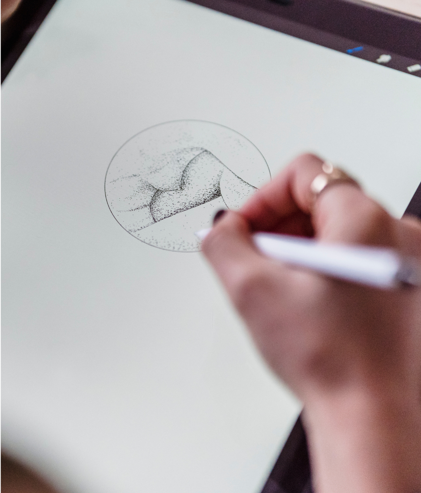

01
The first step of the process is a sit-down with the client. The logos should be made in tune with the voice they represent.
02
I will then make a few sample studies in order to understand the client's vision better.

2018 - 2025
Portfolio
Professionally, I do branding and design, but I'm proudest of my work as a logo artist. A logo needs to express an entire brand identity in its every stroke, and I'm always glad to step forward and face this beautiful challenge.
The first step of the process is a sit-down with the client. The logos should be made in tune with the voice they represent.
I will then make a few sample studies in order to understand the client's vision better.
Once all ideas are aligned, the logos are refined and finalized.
I dedicate my time to logos because I find that they're the embodiment of pure visual art in everyday life. With few words, they say so much about the brand they represent.

123 Anywhere St.,
Any City State, Country 12345